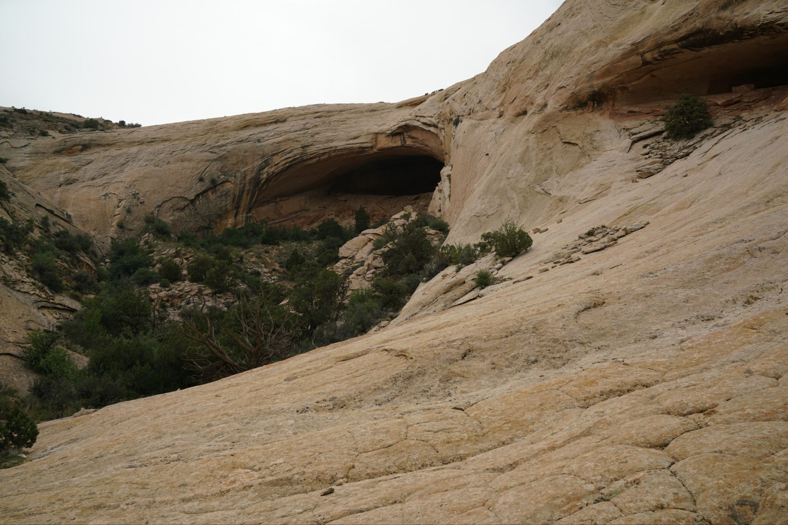
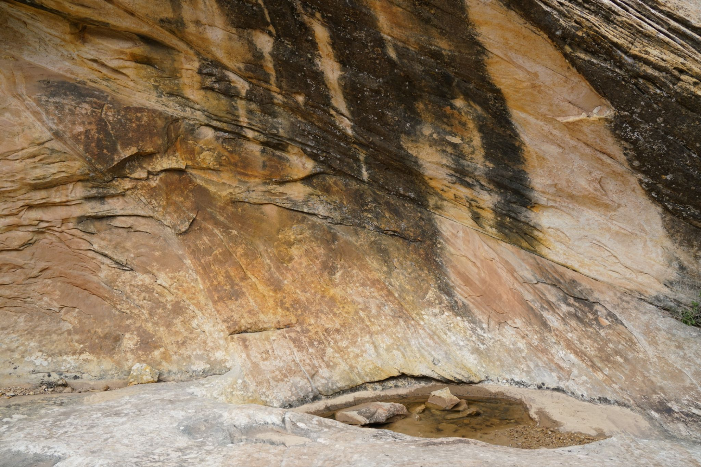
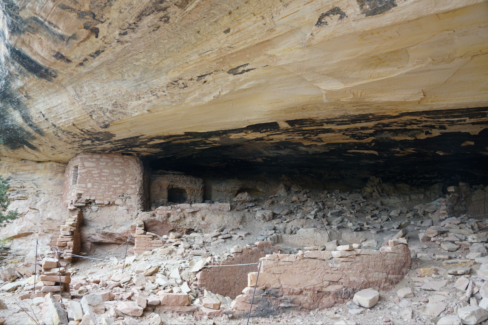
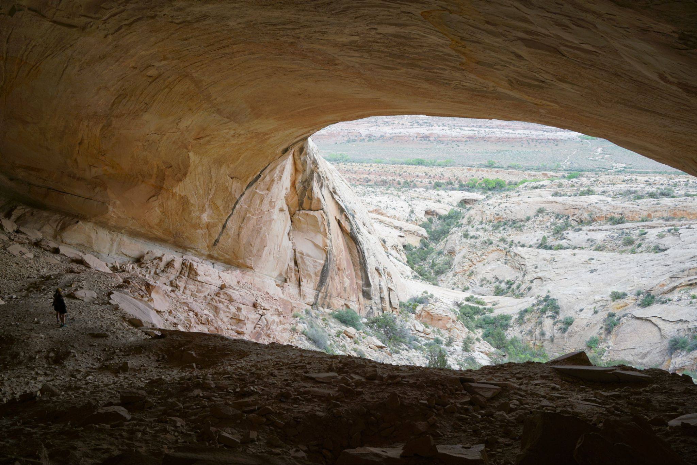
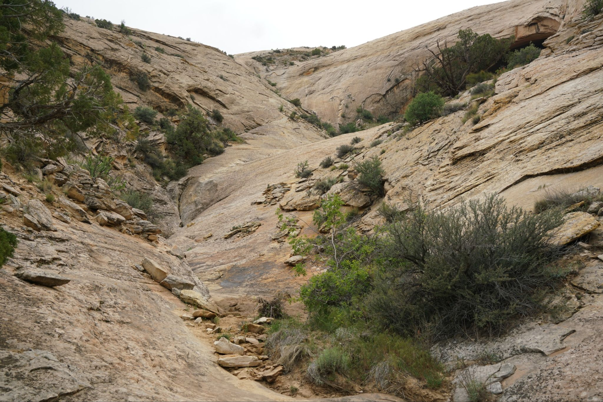
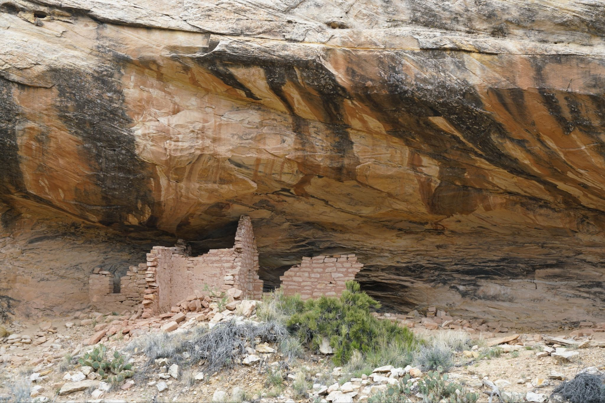
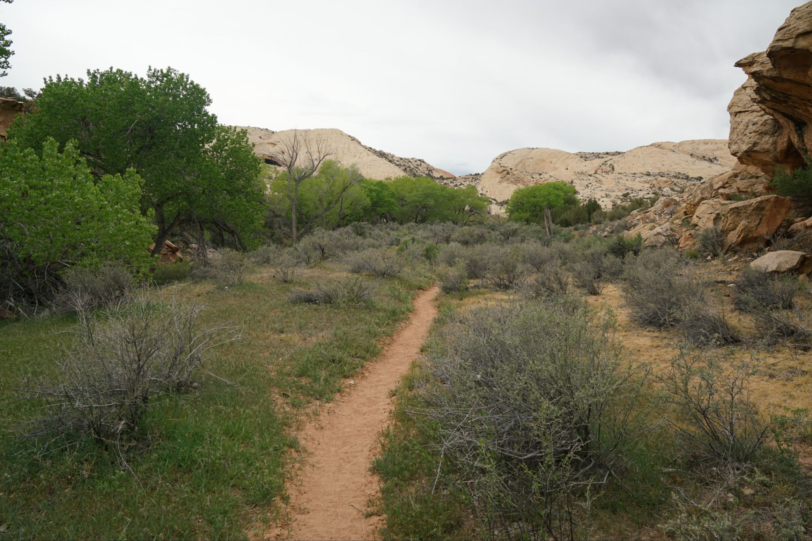

2026-04-06 - Fish Mouth Ruins
Another quick hike like the Split Level ruins just to the south, this hike passed by two small ruins and went up to a giant alcove perched a couple hundred feet above the canyon floor. Its a popular hike and without a doubt one of the largest alcoves around, not only in width or height, but by depth. After scrambling up loose rock to the start of the Fish mouth alcove, you can walk a ways in, so far that it seems like you are inside a house covered by an enormous awning. It was definitely cool to check out.






